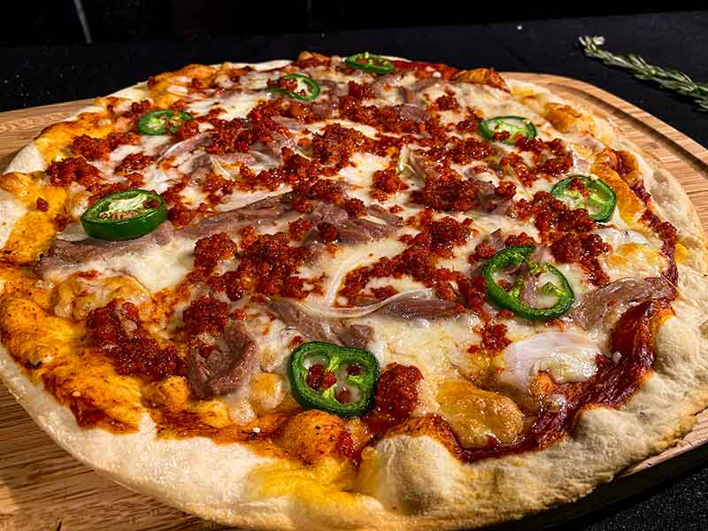

Global Food
Italia
Pizza

Se caracteriza por la fermentación de la masa, su tiempo de cocción y la variedad de sus ingredientes, en los cuales se destacan el tomate y el queso.
Lasagna
Una pasta servida en laminas intercaladas con diferentes ingredientes de por medio, en lo general carne y salsa. En el caso de la italiana, esta hecha de laminas de masa de pasta con carne de por medio, llamada "lasaña al horno".
Risotto
Es una forma de cocinar arroz de las más comunes en Italia, del la cual consiste en ir añadiendo caldo al arroz de forma gradual, junto a más ingredientes que varian según la receta, generalmente queso parmesano.